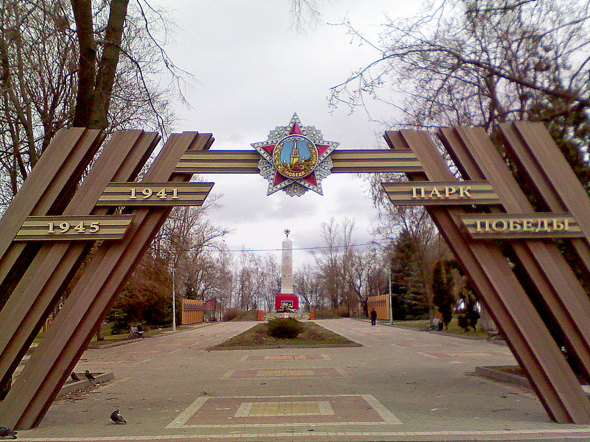

Места нашей области, посвящённые Великой Победе
 Домой
Домой
Мемориальный комплекс в честь воинов-героев (Задонск)
Задонцы внесли немалый вклад в победу над немецко–фашистскими захватчиками. Около 7 тысяч воинов отдали свои жизни в боях за Родину. По инициативе общественности и райвоенкомата в 1965 году было решено увековечить память задонцев и жителей района, павших на фронтах Великой Отечественной войны. На Елецком комбинате производственных предприятий был изготовлен обелиск по эскизу Министерства обороны. Художественное литье из алюминия выполнил Елецкий завод гидроаппаратуры. Активное участие в организации работ принимал Герой Советского Союза П. Н. Хвостов, полковник в отставке Д. А. Зыков и др. Торжественное открытие обелиска состоялось 9 мая 1966 года. Память павших почтили минутой молчания. Ровно через год в мае 1967 года у подножия памятника были замурованы списки погибших воинов–задонцев и зажжён Вечный огонь Славы. Почетное право зажечь огонь получил участник Великой Отечественной войны Геннадий Васильевич Титов. Через полгода состоялось ещё одно торжественное событие: 21 октября 1967 года Вечный огонь, зажженный у Могилы Неизвестного Солдата был, присоединен в Вечному огню у обелиска в Задонске. По этому случаю жители Задонска организовали торжественный митинг, полковник в отставке Дмитрий Антонович Зыков зажег факел от факела липчан, которые везли огонь из Москвы, чтобы зажечь его в городе Липецке у обелиска на площади Героев. В 1973 году в канун Дня Победы к обелиску в городе Задонске был подведен природный газ. 9 мая во время торжественного митинга Герой Советского Союза Георгий Федорович Иванов поднёс факел, доставленный из города Ельца, к газовой горелке и у обелиска вновь вспыхнуло пламя, символизирующее глубокое уважение потомков к памяти павших. В апреле 1975 года в парке Победы появились аллеи – липовая, берёзовая, рябиновая, которые в честь ветеранов высадили студенты и школьники. В 1989 году перед обелиском была возведена «Аллея Героев» – стелы с запечатленными в бронзе барельефами Героев Советского Союза и полных кавалеров ордена Славы. А у самого обелиска появились стелы с именами жителей Задонска, погибших в годы войны. В 2005 году Аллея Героев дополнена барельефами Героев Советского Союза В. К. Михальченко и С. П. Кобзева, а также полного кавалера ордена Славы Ф. А. Комова.
Всякий, вошедший в парк Победы, сразу видит перед собой длинную широкую аллею, которая ведет к обелиску погибшим землякам. Справа и слева расположены стелы с барельефами Героев Советского Союза и полных кавалеров ордена Славы, уроженцев Задонской области. Обелиск, расположенный на невысоком холме, является центром мемориальной композиции. Его венчает красная пятиконечная звезда, а на фронтальной части выделяется надпись: «Слава героям, павшим в боях за свободу и независимость нашей великой Советской Родины в 1941 – 1945 годах! Светлая память о них пусть будет вечно жить в сердцах благодарных потомков». Основание обелиска выкрашено в ярко–красный цвет и украшено с четырёх сторон барельефными изображениями военных действий. Перед обелиском находится чаша Вечного огня и мемориальная плита: «Современники и потомки. Склоните головы. Здесь замурована урна с именным списком 6942 воинов–задонцев, павших в боях за нашу великую Советскую Родину в Отечественной войне 1941 – 1945. Май 1967г.». Рядом можно увидеть табличку с именами трех воинов, которые согласно учетной карточке захоронены в братской могиле. По обеим сторонам от обелиска расположены стелы с поименным списком жителей Задонска, не вернувшихся с полей сражений. Слева от входа в парк находится уникальный в своем роде Памятник Матери.
Изображения:
